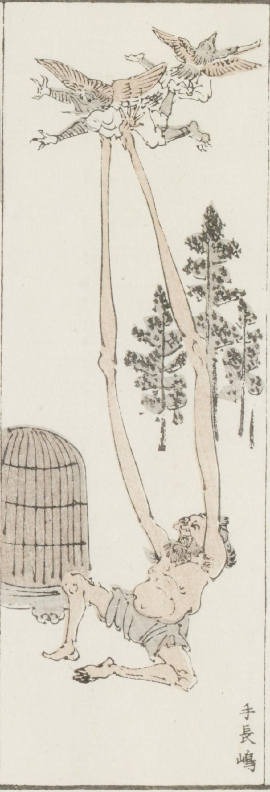

手長；テナガ，天狗；テング，鳥；トリ

腕が体長の倍ほど長い男が、空を飛ぶ2体の天狗のうち1体を両手で捕らえている。男の脇には大きな鳥かごが置かれている。天狗は鳥のような嘴と羽を持ち、袴脚絆をまとっている。
著作者：牧墨僊／出典：親書誌：U426_nichibunken_0097：滑稽洒落狂画苑；コッケイシャレキョウガエン／日付：2007／資源識別子：U426_nichibunken_0097_0003_0000
Copyright (c)2010- International Research Center for Japanese Studies, Kyoto, Japan. All rights reserved.